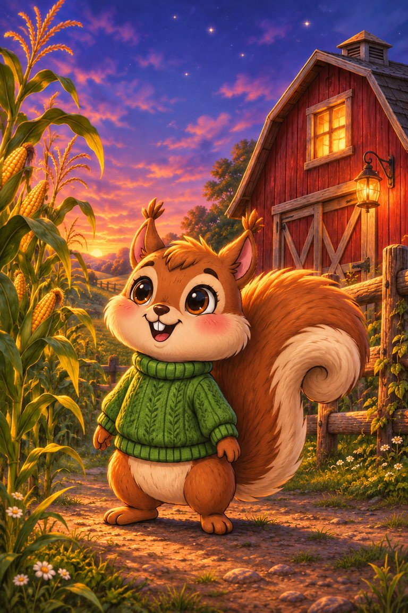
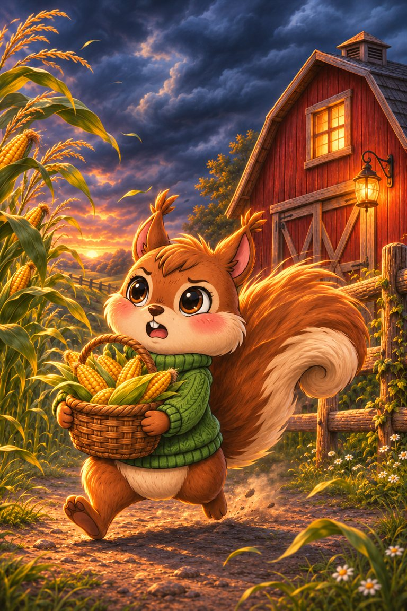
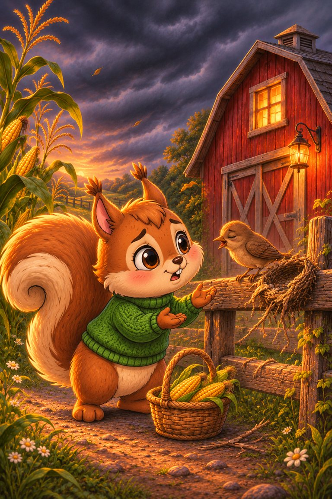
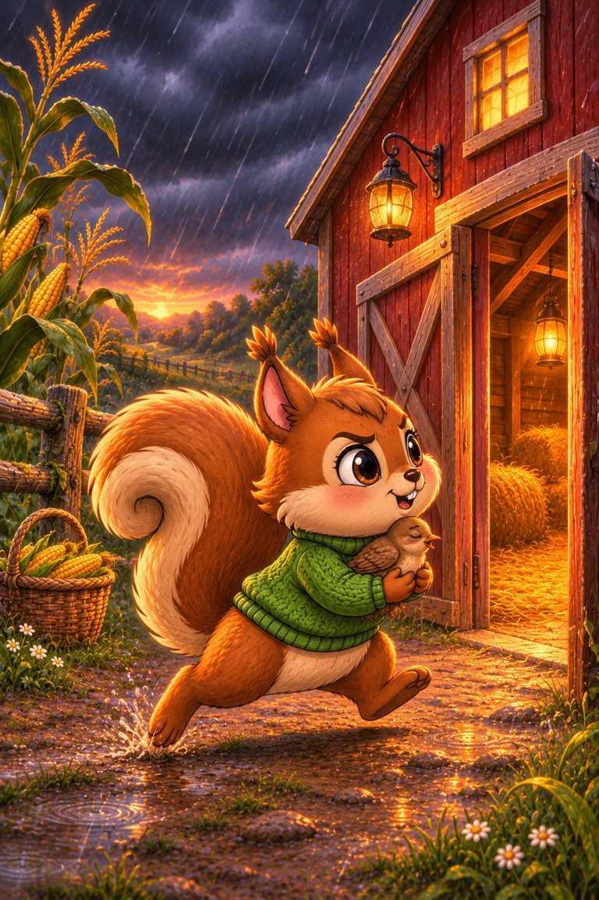
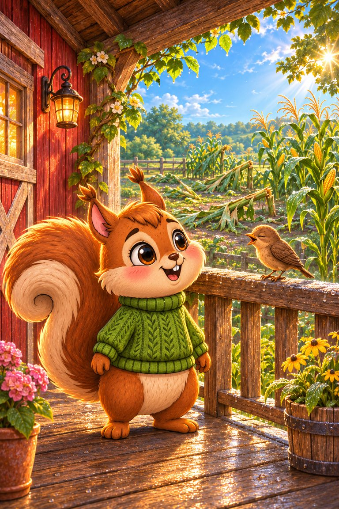

Page 1 of 5
Nutmeg has a farm with a red barn. Her corn is tall, and the first stars are out.
A five-page storm story for practising the sounds letters make with r: ar, or, er, ir and ur.
Read together: practise the focus sounds with an adult. This story uses wider vocabulary and is not a controlled independent decodable stage.
Tricky words to say together first: cloud, thunder, morning.
6 printed pages · 1.2 MB · A4 or US Letter. Download PDF · Open PDF to printOpens in a new tab. Use the PDF viewer's Print control. To use less ink, read online and choose only the questions on page 6 in Print.

Nutmeg has a farm with a red barn. Her corn is tall, and the first stars are out.

Dark clouds start to form. A storm is coming! Nutmeg must get her corn to the barn.

A small bird chirps on the fence. Her nest is torn, and she cannot fly far.

Nutmeg turns back. She lifts the bird and runs for the barn door. Thunder roars in the dark.

Morning comes. Some of the corn is torn, but the bird chirps on the porch. Nutmeg smiles. A farm is more than corn.
A small bird.
o and r.
Reading Trail step 7 is a free web book. Steps 1 to 6 are in SnackPack Sentences & Spelling, with longer stories, word packs and eight literacy games.
Next Reading Trail practice · read togetherPanda‑Cake’s Puddle Party
Explore another book · read togetherTed-E-Bear’s Blanket Fort
Know a family or class who would enjoy it?